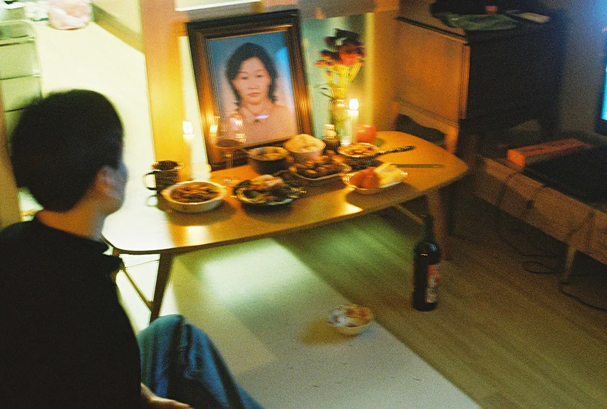

향수 브랜드 그랑핸드가 필름사진상을 일곱 번째로 연다. 접수는 9월 16일 수요일에 열어 22일 화요일에 닫는다. 이레다.
주제는 지난해와 같다
「향으로 기억되는 순간들」. 제6회와 같은 주제다. 향수를 만드는 회사가 사진 공모를 여는 이유가 여기 있다. 냄새와 사진은 둘 다 한순간에 지나가고, 나중에 다시 만나면 잊고 있던 것을 통째로 끌어올린다.
부문은 넷으로 나뉜다. 자연, 사람, 일상, 정물이다. 어느 부문에 낼지는 응모자가 고른다.
내는 것은 한 장
필름으로 찍은 사진 한 점이다. 3000픽셀 이상, 300dpi, JPG 파일로 낸다. 스캔본을 그대로 쓸 수 있는 규격이지만, 현상소 기본 스캔이 3000픽셀에 못 미치는 경우가 있으니 파일을 먼저 열어 확인하는 편이 낫다.
지원 자격에는 제한이 없다. 공고에는 "필름사진을 좋아하는 누구나" 라고만 적혀 있다.

상
- 대상 1명 아이패드 에어 11. 그랑핸드 배포물에 작품이 실리고 비대면 인터뷰를 한다.
- 최우수상 1명 인스타360 GO Ultra.
- 부문상 4명 에어팟 4.
- 입선 최대 10명
상품보다 눈에 띄는 것은 대상의 배포물 게재다. 그랑핸드 매장과 제품에 함께 나가는 인쇄물에 사진이 실린다. 발표는 9월 28일 월요일이다.
지난해에는 천 명이 냈다
제6회 응모자가 1,000명이었다. 수상작 스물일곱 점은 북촌 지우헌에서 사흘간 걸렸다. 2019년 1회로 시작해 해마다 이어 온 공모가 올해로 일곱 번째다.
위 두 장이 지난 회 대상과 최우수상이다. 그랑핸드 홈페이지에 실린 것을 가져왔다. 하나는 커튼 틈으로 내다본 저녁이다. 다른 하나는 영정 앞에 차린 상이다. 둘 다 냄새가 먼저 떠오르는 자리를 찍었다.
내기 전에
접수는 그랑핸드 홈페이지 공지 안의 링크로 한다. 공고에도 지원 전에 홈페이지 공모전 안내글을 반드시 확인하라고 적혀 있다. 부문 구분과 파일 규격이 심사 전에 걸러지는 항목이라 그렇다.
필름 한 통을 지금 넣어 찍기에는 빠듯하다. 이미 찍어 둔 것 가운데서 고르는 편이 현실적이다.